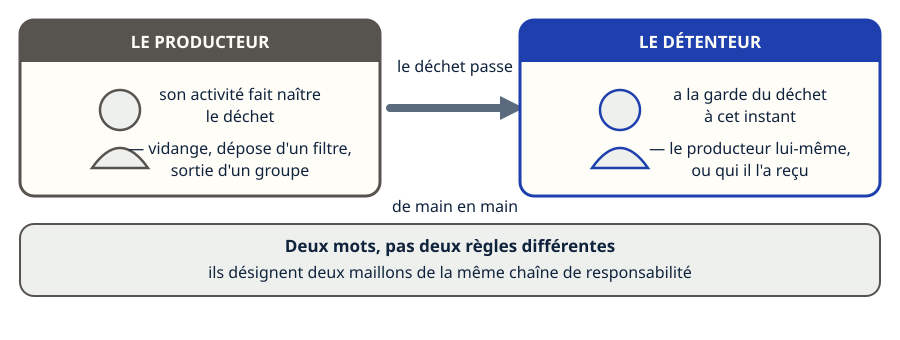
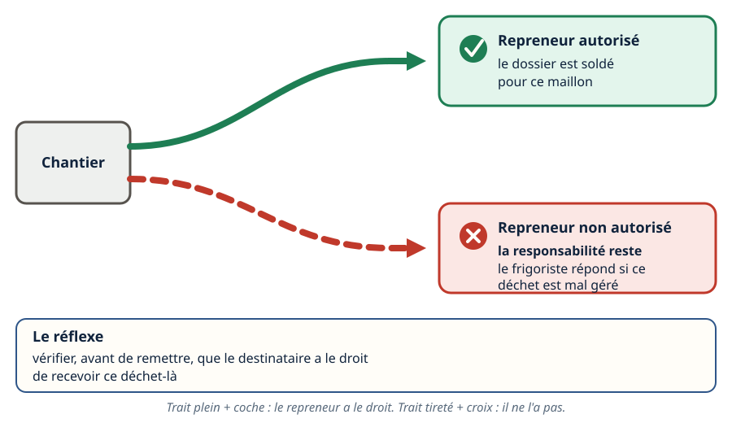
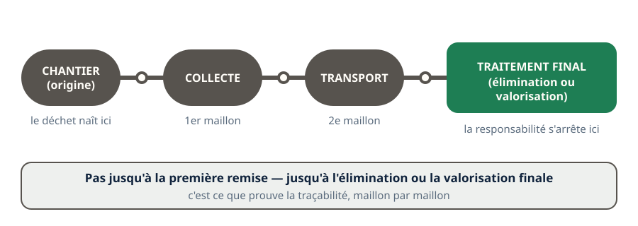
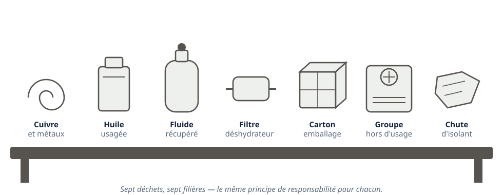
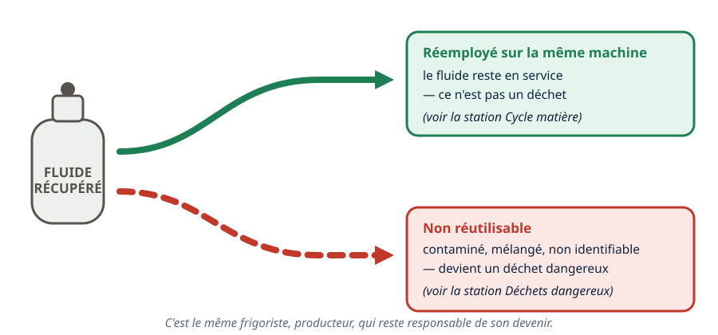
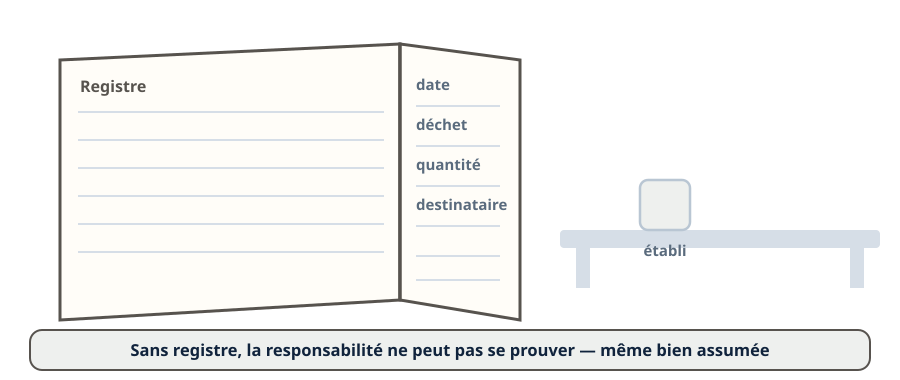
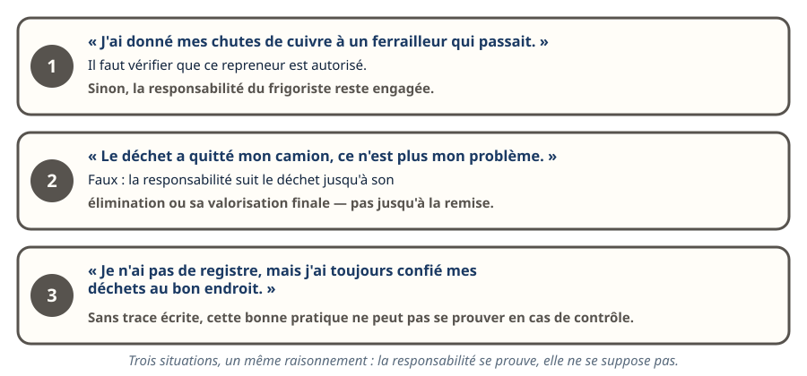
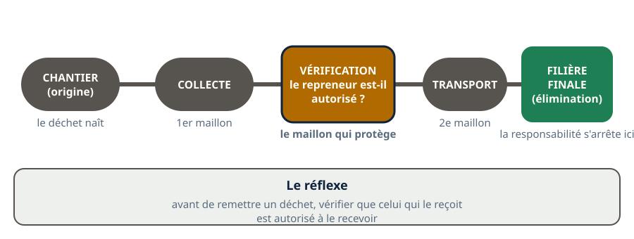

Déchets · niveau BTS
Responsabilités — qui répond du déchet
Mini-station commentée · 8 écrans et 4 questions · environ 10 minutes
À la fin de la station, vous savez distinguer producteur et détenteur d'un déchet, dire pourquoi la responsabilité ne s'arrête pas à la remise du déchet à un tiers, et appliquer ce principe aux déchets qu'un frigoriste produit réellement sur un chantier.
Chaque écran peut être expliqué à voix haute : le bouton « Écouter » commente ce que vous voyez. Rien n'est dit qui ne soit aussi écrit.
Écran 1 sur 8
Deux mots, une seule chaîne : producteur, détenteur
Le producteur est celui dont l'activité fait naître le déchet — le frigoriste qui dépose un filtre déshydrateur usagé, qui vidange une huile, qui sort un ancien groupe de son emballage. Le détenteur est celui qui a la garde du déchet à un instant donné : cela peut être le producteur lui-même, ou la personne à qui il l'a remis — le transporteur, le collecteur, l'entreprise de traitement.
Les deux mots ne désignent pas deux règles différentes : ils désignent deux maillons de la même chaîne de responsabilité.

Écran 2 sur 8
La responsabilité ne s'arrête pas à la remise
Remettre un déchet à quelqu'un d'autre ne solde pas le dossier. Celui qui remet un déchet doit s'assurer que celui qui le reçoit est autorisé à le prendre en charge. Un frigoriste qui confie ses fluides récupérés ou ses métaux à un repreneur non autorisé reste responsable si ce déchet finit mal géré.
Le réflexe : vérifier, avant de remettre, que le destinataire a le droit de recevoir ce déchet-là.

Écran 3 sur 8
Jusqu'où : l'élimination ou la valorisation finale
Le principe se prolonge jusqu'à l'élimination ou la valorisation finale du déchet — pas jusqu'à la première remise. C'est pour cela que la traçabilité existe (voir la station Déchets dangereux) : elle prouve, maillon par maillon, que le déchet a bien atteint une filière autorisée.

Écran 4 sur 8
Les déchets d'un chantier de froid, un par un
Un frigoriste ne produit pas un seul type de déchet. Sur un même chantier :
- le cuivre et les métaux — valorisables, souvent revendus ;
- les huiles usagées ;
- les fluides frigorigènes récupérés ;
- les filtres déshydrateurs ;
- les emballages (cartons, palettes) ;
- les équipements en fin de vie (groupes, unités) ;
- les déchets de chantier (isolants, gaines).
Chacun a sa propre filière, mais le même principe de responsabilité s'applique à tous.

Écran 5 sur 8
Le cas du fluide récupéré
Un fluide récupéré n'est pas systématiquement un déchet : s'il est réemployé sur la même machine, il reste un fluide en service (voir la station Cycle matière). Mais s'il n'est pas réutilisable — contaminé, mélangé, non identifiable — il devient un déchet, et un déchet dangereux (voir la station Déchets dangereux). C'est le même frigoriste, producteur, qui reste responsable de son devenir.

Écran 6 sur 8
Le registre : la mémoire écrite du producteur
Le producteur ou le détenteur tient la trace de ce qu'il produit, remet et fait traiter. Cette mémoire écrite — le registre — est ce qui permet de répondre à une question simple en cas de contrôle : « ce déchet, où est-il allé ? ». Sans registre, la responsabilité ne peut pas se prouver, même si elle a été correctement assumée.

Écran 7 sur 8
Le raisonnement : trois situations de terrain
- « J'ai donné mes chutes de cuivre à un ferrailleur qui passait. » → Il faut vérifier que ce repreneur est autorisé — sinon la responsabilité du frigoriste reste engagée.
- « Le déchet a quitté mon camion, ce n'est plus mon problème. » → Faux : la responsabilité suit le déchet jusqu'à son élimination ou sa valorisation finale, pas jusqu'à la remise.
- « Je n'ai pas de registre, mais j'ai toujours confié mes déchets au bon endroit. » → Sans trace écrite, cette bonne pratique ne peut pas se prouver en cas de contrôle.

Écran 8 sur 8
Bilan et le réflexe
- Producteur : qui fait naître le déchet. Détenteur : qui en a la garde à un instant donné.
- La responsabilité suit le déchet jusqu'à son élimination ou sa valorisation finale.
- Remettre un déchet à un tiers non autorisé n'éteint pas la responsabilité.
- Un frigoriste produit des déchets très variés — chacun a sa filière, tous suivent le même principe.
- Le registre est la preuve écrite de la bonne gestion.
Le réflexe : avant de remettre un déchet, vérifier que celui qui le reçoit est autorisé à le recevoir.

Question 1 sur 4
Que risque le frigoriste qui n'a pas vérifié le repreneur ?
Question 2 sur 4
Qu'est-ce qui distingue le producteur du détenteur ?
Question 3 sur 4
Jusqu'où va la responsabilité d'un producteur de déchet ?
Question 4 sur 4
Pourquoi un frigoriste tient-il un registre de ses déchets ?
Les correspondances de la station
- Traçabilité (sous-ligne Fluidique & thermique, en préparation).
- Impact environnemental (en préparation).
Les deux stations sont en préparation sur le plan du réseau.